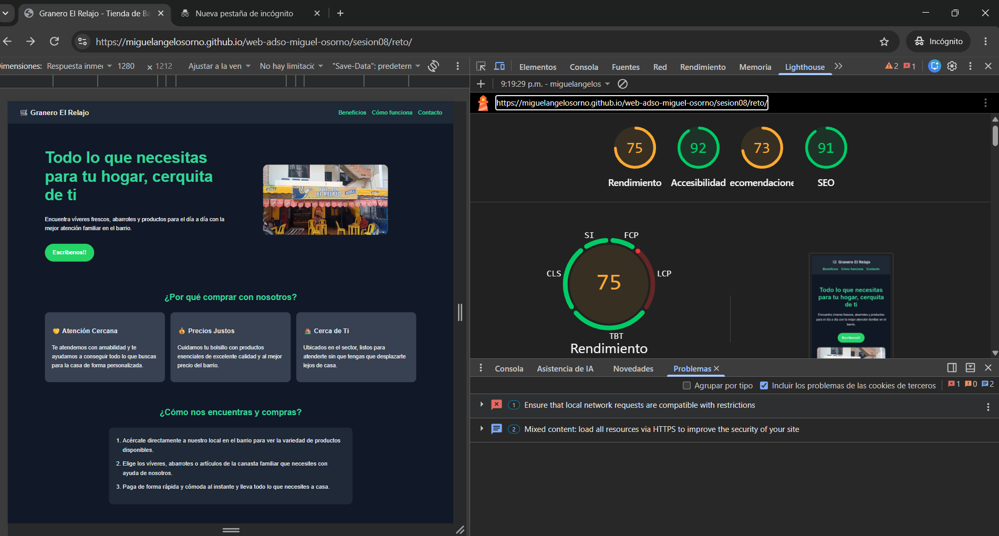
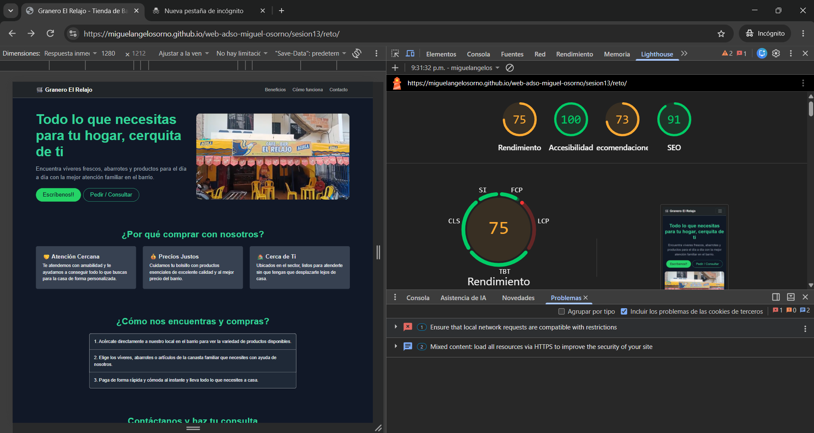

1. Resultados de Lighthouse (modo incógnito)

Sesión 8 (CSS propio)
Medición de rendimiento y métricas generales de la versión con CSS propio.

Sesión 13 (Bootstrap)
Medición de rendimiento y métricas generales de la versión rehecha con Bootstrap.
2. Tabla comparativa
| Criterio | Sesión 8 (CSS propio) | Sesión 13 (Bootstrap) |
|---|---|---|
| Puntaje de Rendimiento (Lighthouse) | Puntaje de 75 | Puntaje de 75 |
| Líneas de CSS escritas | ~165 líneas propias | ~55 líneas de ajuste de marca |
| Tiempo que tomó | Mayor tiempo definiendo rejillas y media queries | Menor tiempo armando estructura y columnas |
| Qué tan única se ve | Identidad visual más libre y personalizada desde cero | Estructura y componentes reconocibles si no se personalizan |
| Qué tan fácil fue hacerla responsive | Requiere escribir grid/flex y media queries a mano | Más rápido usando clases como col-12, col-md-6 y row-cols-* |
3. Conclusión
¿Usaremos Bootstrap o nuestro propio kit en el proyecto final? Vamos a usar Bootstrap en el proyecto final apoyado con un archivo CSS propio pequeño para los colores y ajustes de la marca, sin reescribir rejillas ni media queries a mano.
¿Por qué? Porque me gustó mucho lo rápido y ordenado que se arma la interfaz con sus clases (row, col-12 col-md-6, row-cols-*, navbar colapsable y formularios con validación). Para un proyecto donde hay que avanzar en varias pantallas y mantener la estructura adaptable sin perder tiempo ajustando cada tamaño de pantalla desde cero, Bootstrap acelera bastante el trabajo y permite concentrarse en la funcionalidad y en los detalles visuales de la marca.